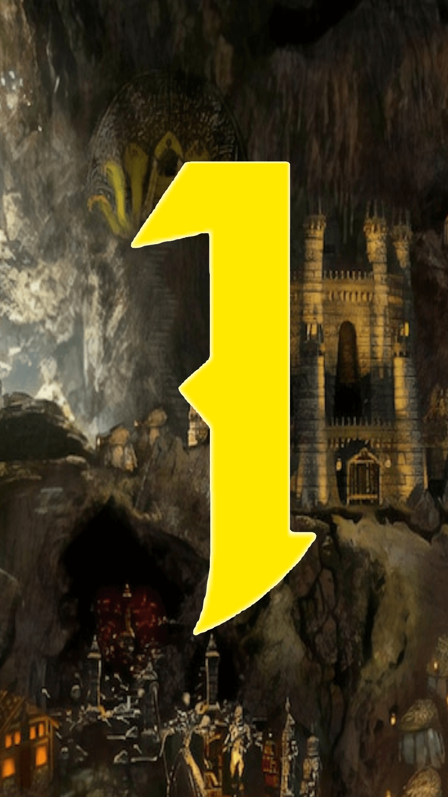
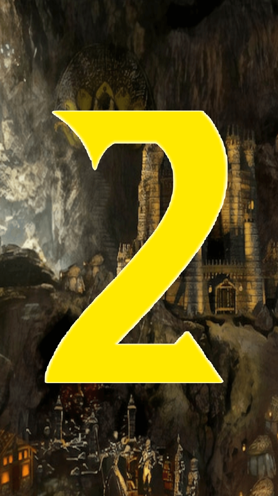
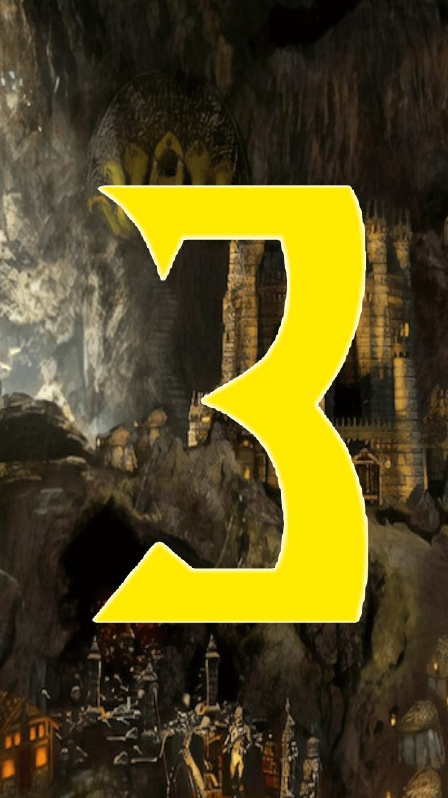
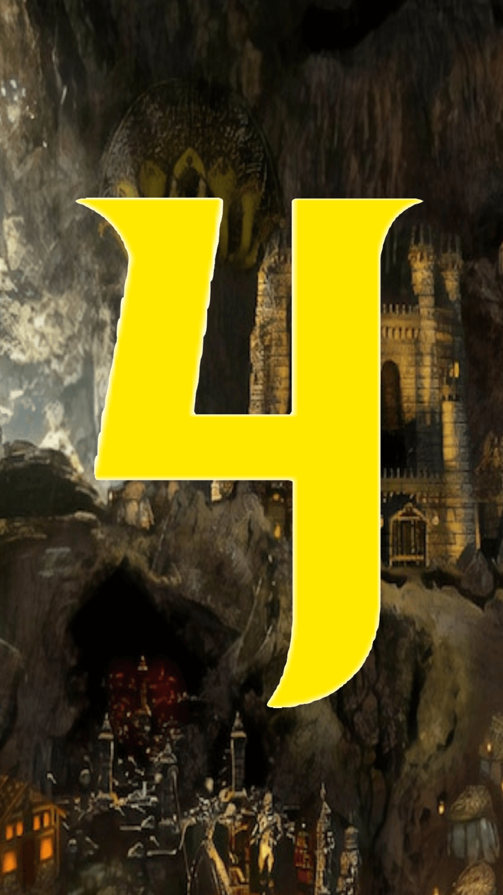
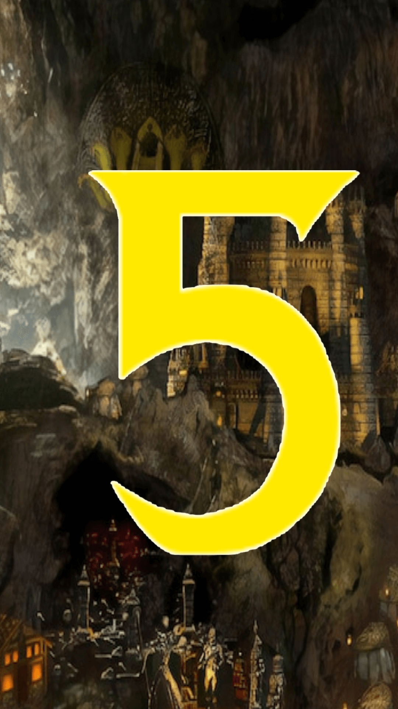

Top 5 zamków w Heroes of Might & Magic 3
Ta strona jest poświęcona najlepszym zamkom w
Heroes of Might & Magic 3
. W każdej zakładce jest konkretny opis zamku, ukazanie jednostek i budowli.




